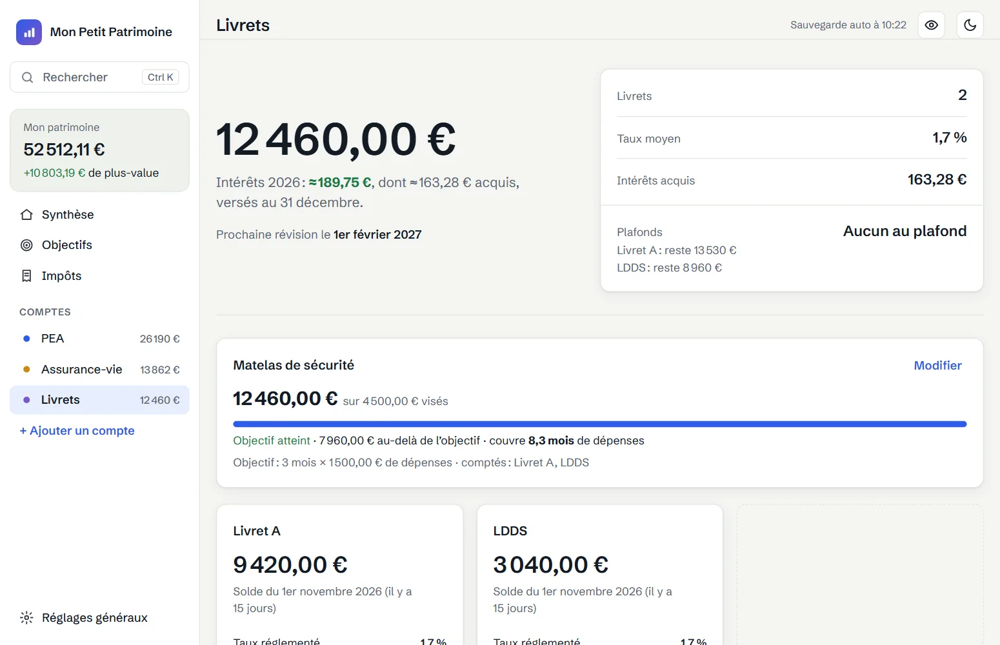
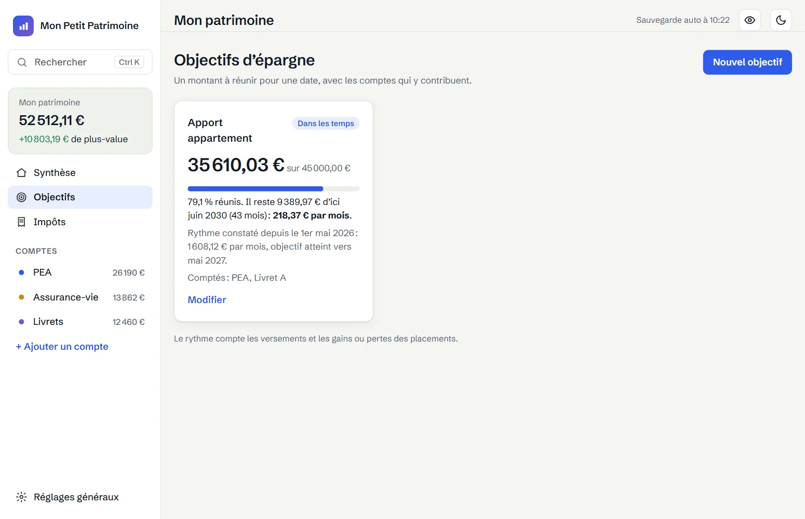

Fonctionnalités
PEA, assurance-vie, livrets : tout ce que fait l’application
Pensée pour les placements français : PEA, compte-titres, assurance-vie, livrets réglementés, PEL et CEL, immobilier. Tout fonctionne sur votre ordinateur.
La Synthèse : tout d’un coup d’œil
- Votre patrimoine total et sa variation sur 1 mois, 6 mois, 1 an ou depuis le début, sans compter vos nouveaux versements
- Ce que vous avez versé, votre plus-value, votre rendement par an
- « À faire » : un livret à mettre à jour, un relevé à saisir ; « À venir » : le prochain versement, les intérêts du 31 décembre
- La répartition par type de placement : actions et ETF, fonds euros, livrets, immobilier, espèces

PEA et compte-titres
- Les cours de vos ETF et actions, mis à jour tout seuls grâce au code ISIN ou au ticker
- La courbe de votre compte, jour par jour, depuis votre premier achat
- La ligne à renforcer au prochain achat, selon la répartition que vous visez
- Les frais de courtage, réels ou estimés ; l’import de l’historique de n’importe quelle banque (CSV, Excel ou copier-coller)
À lire : Calculer le rendement annuel de son PEA quand on verse tous les mois

Assurance-vie
- Vous saisissez votre dernier relevé : fonds euros et parts de chaque support
- L’estimation avance seule : versements programmés, cours, frais de gestion, intérêts nets de prélèvements sociaux
- À chaque relevé, l’écart entre l’estimation et la réalité, support par support
- Les 8 ans du contrat et l’abattement fiscal, calculés pour vous
À lire : Frais de gestion de l’assurance-vie : ce que coûtent 0,85 % par an

Livrets
- Livret A, LDDS, LEP, Livret Jeune, CEL, PEL et livrets bancaires
- Seulement les soldes à saisir
- Les intérêts estimés par quinzaine, aux taux officiels datés
- Le plafond de chaque livret, avec un rappel avant de l’atteindre
- Un matelas de sécurité : combien de mois de dépenses votre épargne couvre
À lire : Intérêts du livret A : la règle des quinzaines expliquée · Livret A et inflation : votre épargne perd-elle de l’argent ? · PEL et CEL : combien emprunter ?

Fiscalité à la sortie
- Ce que vous toucheriez si vous retiriez tout aujourd’hui, impôts et prélèvements déduits
- La date de vos 5 ans (PEA) ou de vos 8 ans (assurance-vie)
- Un récapitulatif annuel pour préparer votre déclaration
- Des estimations à rapprocher de vos documents officiels
À lire : Retrait d’un PEA avant ou après 5 ans : combien d’impôts ? · Assurance-vie après 8 ans : l’abattement de 4 600 € ou 9 200 € expliqué

Objectifs d’épargne
- Un montant, une date : l’effort mensuel nécessaire
- Votre rythme réel et la date à laquelle vous l’atteindrez
- Une alerte si vous prenez du retard

Plusieurs comptes, toute la famille
- Autant de PEA, de compte-titres et d’assurances-vie que vous voulez, chacun avec son nom
- Un titulaire par compte et par livret : la Synthèse et les impôts du foyer ou d’une seule personne
- Les personnes du foyer et la déclaration commune d’un couple : abattement de l’assurance-vie de 9 200 €, seuil des 150 000 € de primes compté par personne
- Vous choisissez les comptes comptés dans le total
Sur votre téléphone
- Votre Synthèse en lecture seule : total, variation, comptes, répartition, échéances et objectifs
- Activée en un clic dans les Réglages généraux, puis un QR code à scanner : aucun compte à créer
- Vos chiffres partent chiffrés de bout en bout : seuls vos appareils peuvent les lire, pas même Mon Petit Patrimoine
- Mise à jour à chaque modification sur l’ordinateur, consultable même hors ligne
- Désactivée par défaut, arrêtée et effacée du serveur en un clic
Et aussi
- Immobilier : vos biens et leurs estimations, un simulateur de crédit, le crédit en cours (patrimoine net, capital restant dû) et le suivi d’un chantier
- « Et après inflation ? » : ce que vaudra votre patrimoine dans 10 ou 20 ans, en euros d’aujourd’hui
- Recherche Ctrl+K, thème sombre, montants masqués d’un clic, annulation
- Sauvegarde automatique à chaque modification, dans le dossier de votre choix
- Un tutoriel au premier démarrage, puis des démarrages guidés pour chaque compte
Il manque quelque chose ? Dites-le-moi : les prochaines versions se décident avec vos retours.